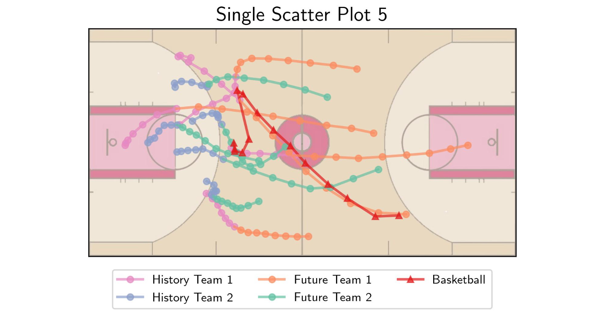

# Packages
import cv2 as cv
import numpy as np
import matplotlib.pyplot as plt
import matplotlib.patches as patches
from matplotlib import cm
# Use LaTeX font
plt.rcParams.update({'text.usetex': True})
# Figure font config
label_font = {'fontfamily': 'Arial Black', 'fontsize': 14}
title_font = {'fontfamily': 'Arial Black', 'fontsize': 16}
legend_font = {'family': 'Palatino Linotype', 'size': 10}
text_font = {'family': 'Palatino Linotype', 'fontsize': 12}
# Load data
# Note: shape = [num_step, num_agent, position]
# last agent is the basketball
hist = np.load('../data/single-scatter-5-hist.npy')
pred = np.load('../data/single-scatter-5-pred.npy')
# Scale the data
hist[..., 0] = hist[..., 0] * 15
hist[..., 1] = hist[..., 1] * 8
pred[..., 0] = pred[..., 0] * 15
pred[..., 1] = pred[..., 1] * 8
# Plot
fig, ax = plt.subplots(1, figsize=(5, 5))
# Plot the beckground court
img = cv.imread('../fig/utils/court.png')
img = cv.cvtColor(img, cv.COLOR_BGR2RGB)
ax.imshow(img, extent=[0, 15, 0, 8], alpha=0.6)
# Scatter history trajectory
ax.plot(hist[:, :5, 0], hist[:, :5, 1], label='History Team 1', color=cm.Set2(3),
marker='o', lw=2, markersize=5, alpha=0.7)
ax.plot(hist[:, 5:-1, 0], hist[:, 5:-1, 1], label='History Team 2', color=cm.Set2(2),
marker='o', lw=2, markersize=5, alpha=0.7)
# Scatter future trajectory
ax.plot(pred[:, :5, 0], pred[:, :5, 1], label='Future Team 1', color=cm.Set2(1),
marker='o', lw=2, markersize=5, alpha=0.7)
ax.plot(pred[:, 5:-1, 0], pred[:, 5:-1, 1], label='Future Team 2', color=cm.Set2(0),
marker='o', lw=2, markersize=5, alpha=0.7)
# Scatter the basketball
ax.plot(hist[:, -1, 0], hist[:, -1, 1], label='Basketball', color=cm.Set1(0),
marker='^', lw=2, markersize=5, alpha=0.7)
ax.plot(pred[:, -1, 0], pred[:, -1, 1], color=cm.Set1(0),
marker='^', lw=2, markersize=5, alpha=0.7)
# Connect history and future
ax.plot([hist[0, :5, 0], pred[-1, :5, 0]], [hist[0, :5, 1], pred[-1, :5, 1]],
color=cm.Set2(1), lw=2, ls='-', alpha=0.7)
ax.plot([hist[0, 5:-1, 0], pred[-1, 5:-1, 0]], [hist[0, 5:-1, 1], pred[-1, 5:-1, 1]],
color=cm.Set2(0), lw=2, ls='-', alpha=0.7)
ax.plot([hist[0, -1, 0], pred[-1, -1, 0]], [hist[0, -1, 1], pred[-1, -1, 1]],
color=cm.Set1(0), lw=2, ls='-', alpha=0.7)
# Label and title
ax.get_xaxis().set_visible(False)
ax.get_yaxis().set_visible(False)
ax.set_title('Single Scatter Plot 5', fontdict=title_font)
# Legend
handles, labels = ax.get_legend_handles_labels()
labels = dict(zip(labels, handles))
fig.legend(labels.values(), labels.keys(), loc='lower center', ncol=3, bbox_to_anchor=(0.5, 0.12), prop=legend_font)
plt.tight_layout()
plt.savefig('../fig/single-scatter-5.jpg', dpi=300)